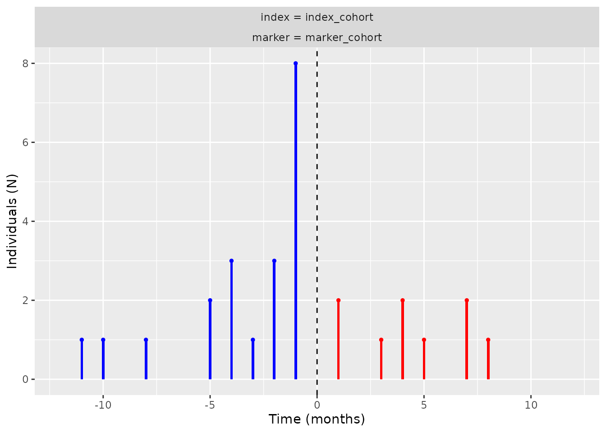
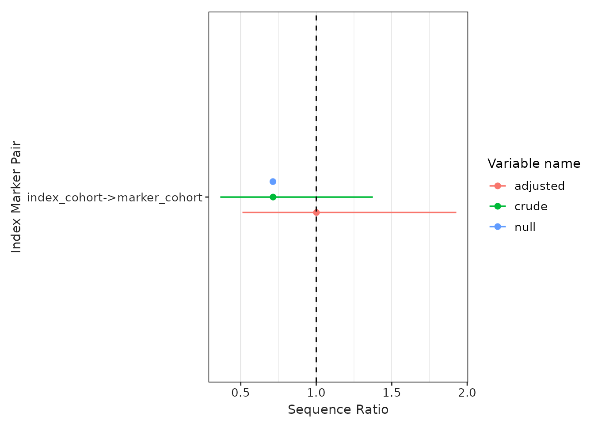

CohortSymmetry provides tools to perform Sequence Symmetry Analysis (SSA). Before using the package, it is highly recommended that this method is tested beforehand against well-known positive and negative controls. The details of SSA and the relevant controls could be found using Pratt et al (2015).
The functions you will interact with are:
generateSequenceCohortSet(): this function will create a cohort with individuals present in both (the index and the marker) cohorts.summariseSequenceRatios(): this function will calculate sequence ratios.tableSequenceRatios()andplotSequenceRatios(): these functions will help us to visualise the sequence ratio results.summariseTemporalSymmetry(): this function will produce aggregated results based on the time difference between two cohort start dates.plotTemporalSymmetry(): this function will help us to visualise the results from summariseTemporalSymmetry().
Below, you will find an example analysis that offers a brief and comprehensive overview of the package’s functionalities. More context and further examples for each of these functions are provided in later vignettes.
First, let’s load the relevant libraries.
library(CDMConnector)
library(dplyr)
library(DBI)
library(omock)
library(CohortSymmetry)
library(duckdb)
library(visOmopResults)The CohortSymmetry package works with data mapped to the OMOP CDM. Hence, the initial step involves connecting to a database. As an example, we will be using Omock package to generate a mock database with two mock cohorts: the index_cohort and the marker_cohort.
cdm <- emptyCdmReference(cdmName = "mock") |>
mockPerson(nPerson = 100) |>
mockObservationPeriod() |>
mockCohort(
name = "index_cohort",
numberCohorts = 1,
cohortName = c("index_cohort"),
seed = 1,
) |>
mockCohort(
name = "marker_cohort",
numberCohorts = 1,
cohortName = c("marker_cohort"),
seed = 2
)
con <- dbConnect(duckdb::duckdb())
cdm <- copyCdmTo(con = con, cdm = cdm, schema = "main", overwrite = T)Once we have established a connection to the database, we can use the
generateSequenceCohortSet() function to find the
intersection of the two cohorts. This function will provide us with the
individuals who appear in both cohorts, which will be named
intersect - another cohort in the cdm reference.
cdm <- generateSequenceCohortSet(
cdm = cdm,
indexTable = "index_cohort",
markerTable = "marker_cohort",
name = "intersect",
combinationWindow = c(0, Inf)
)See below that the generated cohort follows the format of an OMOP CDM cohort with the addition of two extra columns: index_date and marker_date. These columns correspond to the cohort_start_date in the index_cohort and the marker_cohort, respectively.
cdm$intersect |>
dplyr::glimpse()
#> Rows: ??
#> Columns: 6
#> $ cohort_definition_id <int> 1, 1, 1, 1, 1, 1, 1, 1, 1, 1, 1, 1, 1, 1, 1, 1, 1…
#> $ subject_id <int> 13, 23, 33, 40, 43, 45, 51, 53, 6, 38, 73, 76, 2,…
#> $ cohort_start_date <date> 1990-02-22, 2002-01-27, 2010-01-23, 1974-04-19, …
#> $ cohort_end_date <date> 1994-11-09, 2010-01-26, 2010-10-02, 1999-01-15, …
#> $ index_date <date> 1994-11-09, 2010-01-26, 2010-10-02, 1974-04-19, …
#> $ marker_date <date> 1990-02-22, 2002-01-27, 2010-01-23, 1999-01-15, …Once we have the intersect cohort, you are able to explore the
temporal symmetry by using summariseTemporalSymmetry,
tableTemporalSymmetry, and
plotTemporalSymmetry():
temporal_symmetry <- summariseTemporalSymmetry(
cohort = cdm$intersect,
timescale = "year")The result can be viewed using table and plot functions.
tableTemporalSymmetry(result = temporal_symmetry)| Marker name | Estimate name |
Variable level
|
||||||||||||||||
|---|---|---|---|---|---|---|---|---|---|---|---|---|---|---|---|---|---|---|
| -19 | -11 | -10 | -8 | -5 | -4 | -3 | -2 | -1 | 0 | 1 | 3 | 4 | 5 | 7 | 8 | 24 | ||
| mock; index_cohort | ||||||||||||||||||
| marker_cohort | yearly_count | 1 | 1 | 1 | 1 | 2 | 3 | 1 | 3 | 8 | 5 | 2 | 1 | 2 | 1 | 2 | 1 | 1 |
plotTemporalSymmetry(result = temporal_symmetry)
Next, we will use the summariseSequenceRatios() function
to get the crude sequence ratios, adjusted sequence ratios, and the
corresponding confidence intervals.
sequence_ratio <- summariseSequenceRatios(cohort = cdm$intersect)Finally, we can visualise the results using
tableSequenceRatios():
tableSequenceRatios(result = sequence_ratio)| Index cohort name | Variable name | Estimate name |
Marker cohort name
|
|---|---|---|---|
| marker_cohort | |||
| mock | |||
| index_cohort | index | N (%) | 15 (41.70%) |
| marker | N (%) | 21 (58.30%) | |
| null | SR | 0.71 | |
| crude | SR [CI 95%] | 0.71 [0.36 - 1.38] | |
| adjusted | SR [CI 95%] | 1.00 [0.51 - 1.93] | |
Or create a plot with the adjusted sequence ratios:
plotSequenceRatios(result = sequence_ratio)